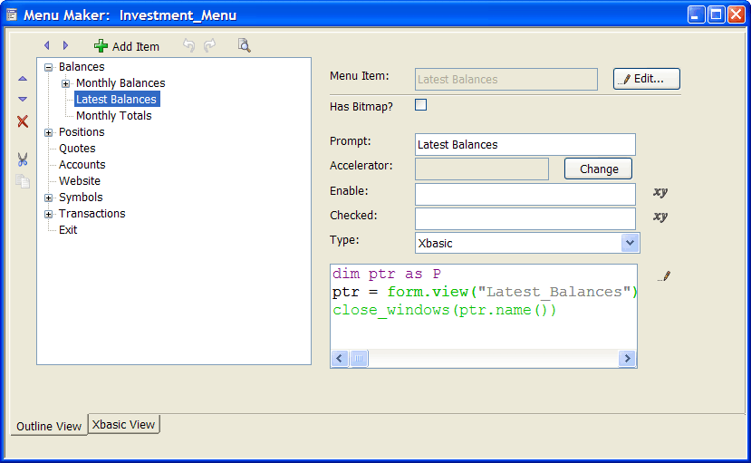
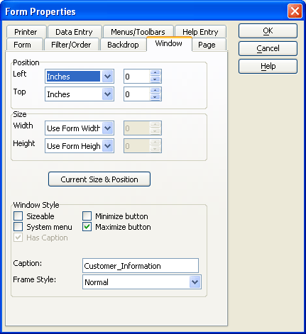
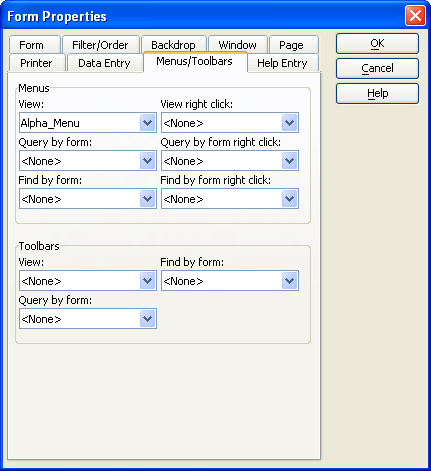
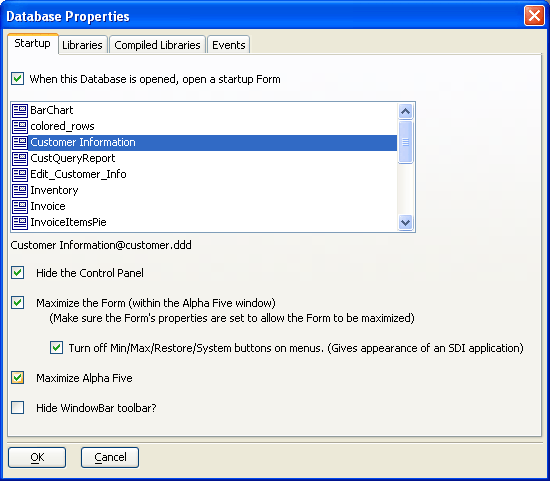
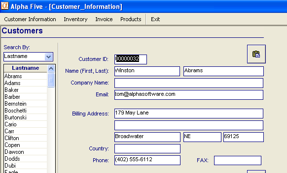

Creating a Maximized Application with a Menu
Many application developers would like to present their software with all traces of Alpha Anywhere hidden and with access to Windows tightly controlled. This example demonstrates a technique using the sample AlphaSports database.
Creating the "Alpha_Menu" Menu
This demonstration will have a menu that controls access to the different forms. To create the menu:
Display the Code tab of the Control Panel.
Select New > Menu to display the New Menu dialog.
Select "Blank Menu" and click OK to display the Menu Maker dialog.

For each form that you want to include in the menu:
Click Add Item to display the Add New Item dialog.
Enter the text of the menu entry in the Menu entry Item name control.
Click OK to continue.
Select "Xbasic" in the Type list.
Enter the following code in the code window. Substitute the name of the form for <form name>. The close_windows() function (described below) takes as an argument the name of the current window. The ptr.name() method retrieves the name of the current window, which may be different than what you specified in the form.view() command.
|
dim ptr as P ptr = form.view("<form name>") close_windows(ptr.name()) |
When you have added all entries, click Save to display the Save Menu As dialog.
Enter the menu's name ("Alpha_Menu") and click OK.
Click Close on the toolbar.
Form Properties
Select each form that you wish to display in the Forms tab of the Control Panel :
Right click on the background of the form and select Properties... .
Display the Window tab.
The Position and Size values for the form are irrelevant.
Make sure that Maximize button is check box is selected. In this example, in order to tightly control the user's access to Alpha Five and Windows, the other Window Style check boxes are cleared.

Display the Menus/Toolbars tab.
Select the menus and toolbars that you want to be available to the user. In this demonstration, the only menu that the user can access is the "Alpha_Menu".
Click OK to save your changes.

Create the Close_Windows() function
The Close_Windows() function closes all but the current window.
Display the Code tab of the Control Panel.
Select New > Function to display the Create New Function dialog.
 Note : It is possible
to by-pass the display of this dialog with the appropriate preference
setting ( View > Settings > System > Preferences > New Functions.
Note : It is possible
to by-pass the display of this dialog with the appropriate preference
setting ( View > Settings > System > Preferences > New Functions.
Enter "close_windows" in the Function Name control.
Select "Void" in the Return Type list and click OK.
Enter and save the following code. The function closes all but the current form, making sure that only one form is open at a time.
|
FUNCTION close_windows as V ( current_window as C ) dim open_windows as C open_windows = a5_list_open_windows() open_windows = word_subtract(open_windows, current_window, crlf())'remove the current window from the list 'generate the xbasic to close all of the open windows cmd = *for_each(x, x + ".close()", open_windows) 'now execute the xbasic evaluate_template(cmd) END FUNCTION |
Database Properties
This procedure causes the user to go directly to your initial form, while hiding Alpha Anywhere.
Select File > Database Properties... to display the Database Properties dialog.
Select the When this Database is opened check box.
Select the initial form to display. In this case it is "Customer Information".
Select the Hide the Control Panel check box.
Select the Maximize the Form check box.
Select Turn off Min/Max/Restore/System buttons on menus.
Optionally, select Maximize Alpha Anywhere.
Optionally, select Hide WindowBar Toolbar.
Click OK to continue.

The Results
After closing and reopening AlphaSports, you will see something like this:

See Also